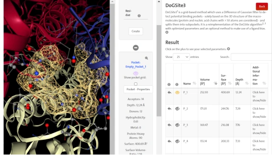

Workflow
Процесс работы

Target and sequence searchВыбор мишени и поиск последовательностиSelected Influenza A H3N2 hemagglutinin, NCBI accession ABB46547.1, and reviewed related sequences.Выбран гемагглютинин Influenza A H3N2 с идентификатором NCBI ABB46547.1; выполнен просмотр родственных последовательностей.
Phylogenetic scopeФилогенетическая выборкаNarrowed the initial 1980–1990 result set to 1980–1985 to meet the tree-building tool limit of fewer than 1,000 sequences.Исходная выборка 1980–1990 годов была сужена до 1980–1985 годов из-за ограничения инструмента построения дерева — менее 1000 последовательностей.
Structural-model reviewПроверка структурной моделиCompared templates using sequence identity and the reported Å-scale structural difference, then reviewed model geometry with a Ramachandran plot.Шаблоны сравнивались по идентичности последовательности и указанному структурному различию в Å; геометрия модели проверялась по карте Рамачандрана.
Binding-site selectionОпределение сайта связыванияUsed DoGSite3 to predict pockets from the 3D structure, compared the five largest candidates and noted similar pockets across the hemagglutinin trimer.DoGSite3 использовался для прогнозирования карманов по 3D-структуре; сопоставлены пять крупнейших кандидатов и отмечены сходные карманы в тримере гемагглютинина.
Docking and interaction reviewДокинг и анализ взаимодействийPrepared or converted ligand files, ran JAMDA docking, exported results and reviewed selected poses and 2D non-covalent interactions in PoseEdit.Подготовлены и преобразованы файлы лигандов, выполнен докинг JAMDA, выгружены результаты и проанализированы выбранные позы и 2D-диаграммы нековалентных взаимодействий в PoseEdit.
What the exercise demonstrates
Какие навыки показывает работа
Target selectionSequence-set curationTool-limit awarenessStructural-model reviewPocket rankingLigand-format troubleshootingCritical interpretationTransparent limitations
Выбор мишениФормирование выборкиУчёт ограничений инструментовПроверка структурной моделиРанжирование кармановРабота с форматами лигандовКритическая интерпретацияПрозрачное описание ограничений
The exercise also exposed practical data-quality and interoperability issues: several candidate compounds were not recognized or did not return a valid score. This required alternative structure generation or format conversion and a clear distinction between missing results and interpretable docking outputs.
Работа также выявила практические проблемы качества и совместимости данных: несколько соединений не распознавались инструментом или не давали корректной оценки. Это потребовало альтернативной генерации структуры или преобразования формата и чёткого отделения отсутствующих результатов от интерпретируемых выходных данных докинга.